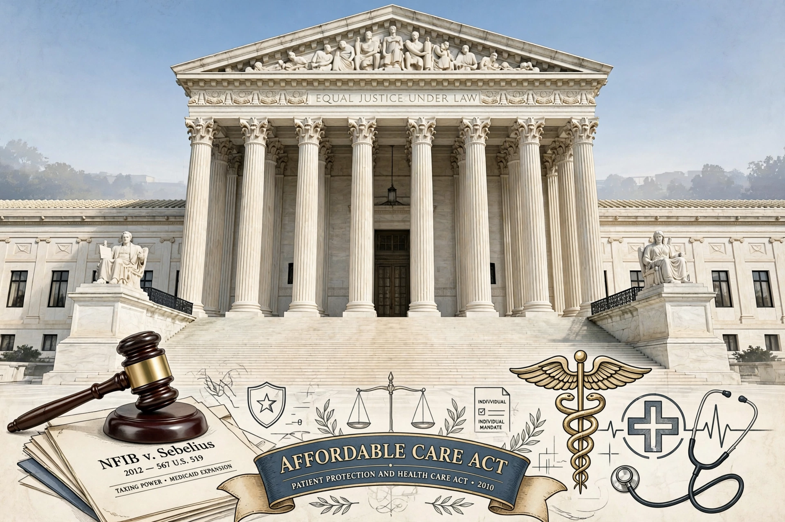

Court: Supreme Court of the United States
Decided: 28 June 2012
Citation: 567 U.S. 519
Chief Justice: John Roberts (majority opinion)
Question: Constitutionality of the Affordable Care Act
National Federation of Independent Business v. Sebelius, 567 U.S. 519 (2012), was a landmark Supreme Court decision upholding most of the Patient Protection and Affordable Care Act (ACA), commonly called Obamacare.
In a 5–4 decision, Chief Justice John Roberts, joined by the Court's liberal justices, held that the individual mandate — requiring most Americans to buy health insurance or pay a penalty — was a constitutional exercise of Congress's taxing power, though it could not be justified under the Commerce Clause or the Necessary and Proper Clause. The Court also held, 7–2, that the ACA's Medicaid expansion was unconstitutionally coercive to the states, and made the expansion effectively optional.
Twenty-six states, the National Federation of Independent Business, and several individuals challenged the ACA shortly after its enactment in 2010. Lower courts split on the mandate's validity, setting up the Supreme Court case, argued over three days in March 2012 — the longest oral argument in decades.
The decision preserved the central architecture of the ACA while placing new limits on the Commerce Clause and Spending Clause. It remains a leading case on federalism and the taxing power.